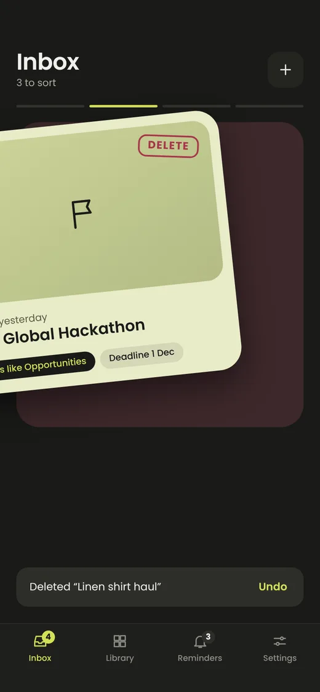
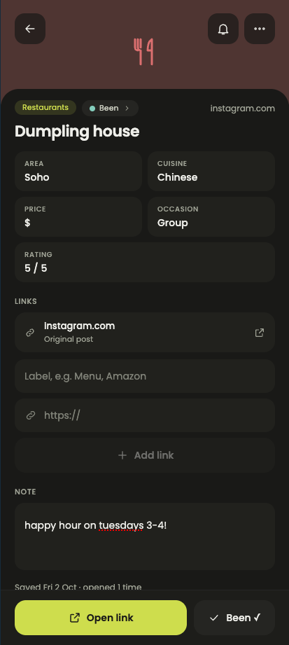
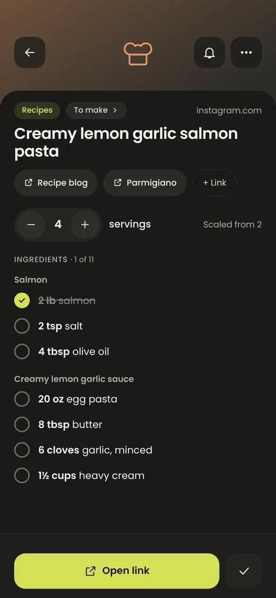
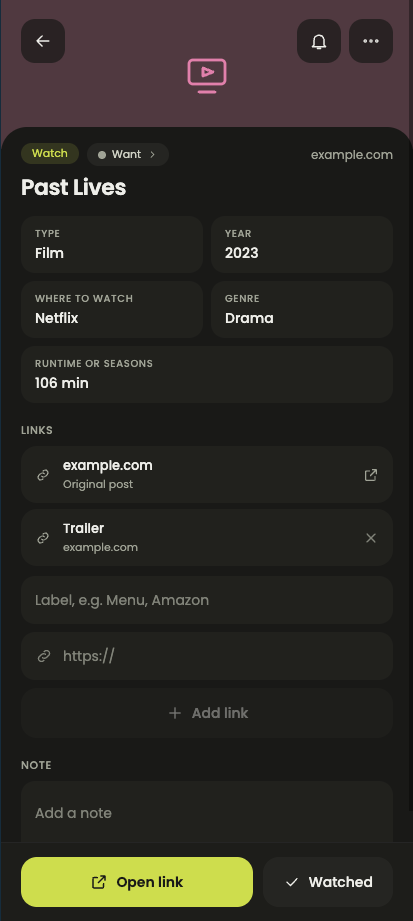
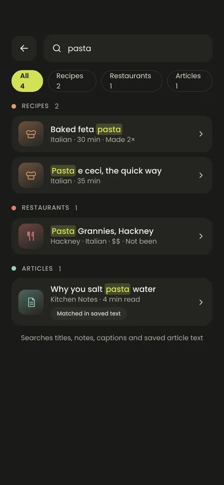
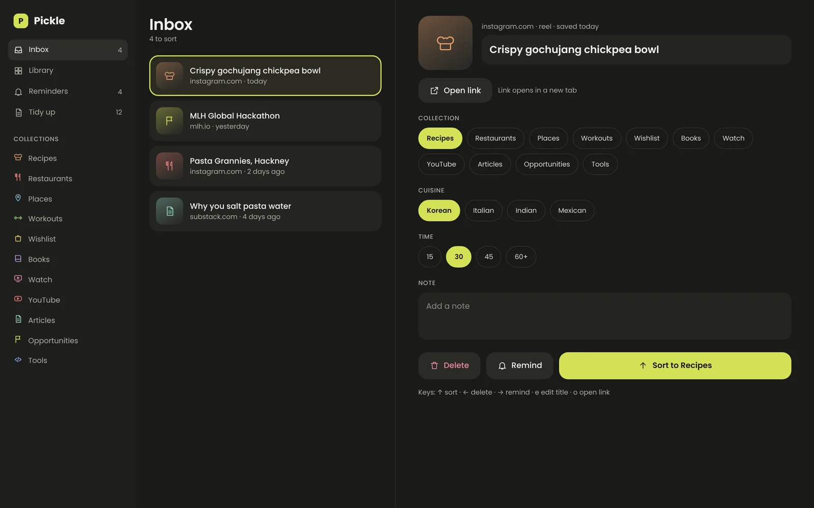

An inbox you can clear
New saves wait in your inbox as big, swipeable cards. Work through them like a stack and finish at inbox zero.
- Swipe up to sort, left to delete, right to remind
- Already saved? Pickle tells you instead of duplicating
- Deleted by accident? Undo, or find it in Trash for 30 days


Collections that know what they hold
- 13 ready-made collections, or build your own
- Rename, recolor and reorder statuses to fit how you work
- Custom fields for anything the defaults miss

Details (customizable) that make sense!
- Ingredient checklists with scalable servings
- Sets and reps for workouts
- Extra links on any card, with a one-tap primary action


Search and filter, whatever you like
Search across titles, captions and saved article text. Then narrow down with filters that change per collection: Italian, under 30 minutes, vegetarian.


Reminders and tasks, attached to cards
- Prefilled from deadlines like hackathons and scholarships
- Today, upcoming, anytime and done in one list
- Reminders sync to your laptop too


On your laptop, too
A keyboard-first layout for triage. Sort with the arrow keys, open a link with o, edit a title with e, and open several saved links at once.
